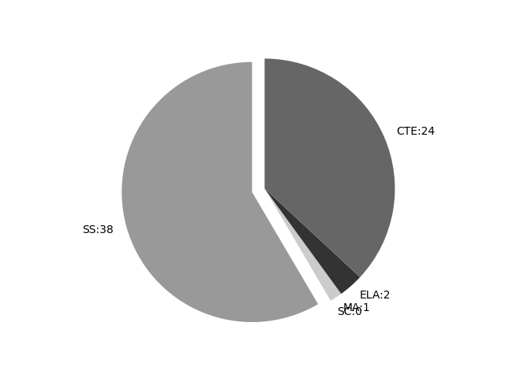

South Carolina
Report date: 2021-07-08
The frequency of all keywords found in this state's standards: 65
Comparable state score: 0.34 (median: .303, SD: .324)
The frequency above is the sum of all keywords found in all of this state's four core academic standards and the state's CTE/career standards. This total count is broken down by keyword and discipline area below.
On this site, 'comparable scores' are calculated as: keywords found divided by total words in the standards document(s) - multiplied by 100,000. The comparable scores attempt to normalize data, accounting for very different sizes of curriculum guidance documentation.
Frequencies by keyword or phrase:- spatial: 36
- geographic information system: 4
- geospatial: 8
- Global Positioning System: 4
- GIS: 13

Frequencies by discipline area: - SS: 38
(Comp: 4.319) - SC: 0
(Comp: 0.0) - MA: 1
(Comp: 0.101) - ELA: 2
(Comp: 0.418) - CTE: 24
(Comp: 0.149)
External support files:
Examples of keyword use by discipline area (and document): - CTE
- agmech-and-tech-for-the-workplaceii.pdf, page:5, position:2687
the following objectives: 1. Define precision technology and explain its role in agriculture. 2. Explain the use of Global Positioning System in precision agriculture.. 3. Explain the use of a geographic information system in precision agriculture. 4. Discuss the advanta - agmech-and-tech-for-the-workplaceii.pdf, page:5, position:2608
Objectives: Instruction in this lesson should result in students achieving the following objectives: 1. Define precision technology and explain its role in agriculture. 2. Explain the use of Global Positioning System in precision agriculture.. 3. Explain the use o - equipment-operation-and-maintenance.pdf, page:3, position:606
Objectives. Instruction in this lesson should result in students achieving the following objectives: 1. Define precision technology and explain its role in agriculture. 2. Explain the use of Global Positioning System in precision agriculture.. 3. Explain the use of - forestry.pdf, page:5, position:1767
1. Explain the symbols that may be found on a map legend. 2. Proper use a map to find a specific location. 3. Develop a map to a given area using compass and pacing skills. Lesson 3Š GIS and GPS Student Learning Objectives. Instructio - forestry.pdf, page:5, position:1958
3Š GIS and GPS Student Learning Objectives. Instruction in this lesson should result in students achieving the following objectives: 4. Explain the use of a geographic information system (GIS) as it applies to forestry. 5. Explain the use o - agmech-and-tech-for-the-workplacei-1.pdf, page:6, position:1946
Instruction in this lesson should result in students achieving the following objectives: 1. Explain a Geographic Information System (GIS). 2. Describe what types of data are included in a GIS. 3. Describe how GIS information can be used as - agmech-and-tech-for-the-workplacei-1.pdf, page:6, position:1685
can be used to determine the position of objects on earth. 2. Describe how GPS satellites are used to navigate variable rate applications of agricultural inputs. Lesson 3: Understanding Geographic Information Systems (GIS) Student Learning Objectives: Instruction - agmech-and-tech-for-the-workplacei-1.pdf, page:6, position:1309
this lesson should result in students achieving the following objectives: 1. Explain precision farming. 2. Describe the benefits of precision farming on agriculture. Lesson 2: Understanding Global Positioning Systems (GPS) Student Learning Objectives: Instruction - agmech-and-tech-for-the-workplacei-1.pdf, page:6, position:1716
the position of objects on earth. 2. Describe how GPS satellites are used to navigate variable rate applications of agricultural inputs. Lesson 3: Understanding Geographic Information Systems (GIS) Student Learning Objectives: Instruction in th - GISTechnology2.pdf, page:0, position:13
- GISTechnology2.pdf, page:0, position:226
2 COURSE CODE: 5362 COURSE DESCRIPTION: Geographical Information Systems (GIS) 2 is designed to enableprepare students to use their knowledge of mapping and cataloging to complete numerous geospatial applications. They will learn techniques in dis - GISTechnology2.pdf, page:0, position:106
- GISTechnology2.pdf, page:1, position:1552
Label features. 2. Insert, copy, and paste data into new data frames. 3. Create graphs and reports from data. 4. Demonstrate how to analyze land use, population, and flood zone data. 5. Create geospatial data. 6. Symbolize a raster layer. 7. Resolve u - GISTechnology2.pdf, page:1, position:1697
land use, population, and flood zone data. 5. Create geospatial data. 6. Symbolize a raster layer. 7. Resolve unmatched addresses while geocoding addresses. 8. Use dissolve features, hyperlink, spatially join data, and create buffer functions. - agricultural-structural-mechanics.pdf, page:4, position:2778
Instruction in this lesson should result in students achieving the following objectives: 1. Explain a Geographic Information System (GIS). 2. Describe what types of data are included in a GIS. 3. Describe how GIS information can be used as - agricultural-structural-mechanics.pdf, page:4, position:2518
can be used to determine the position of objects on earth. 2. Describe how GPS satellites are used to navigate variable rate applications of agricultural inputs. Lesson 3ŠUnderstanding Geographic Information Systems (GIS) Student Learning Objectives. Instruction - agricultural-structural-mechanics.pdf, page:4, position:2144
this lesson should result in students achieving the following objectives: 1. Explain precision farming. 2. Describe the benefits of precision farming on agriculture. Lesson 2ŠUnderstanding Global Positioning Systems (GPS) Student Learning Objectives. Instruction - agricultural-structural-mechanics.pdf, page:4, position:2549
the position of objects on earth. 2. Describe how GPS satellites are used to navigate variable rate applications of agricultural inputs. Lesson 3ŠUnderstanding Geographic Information Systems (GIS) Student Learning Objectives. Instruction in th - GISTechnology1.pdf, page:0, position:13
- GISTechnology1.pdf, page:0, position:410
strategies, and essential basic computer skills. Students will acquire a basic understanding of geographic terms and concepts necessary for the appropriate use of GIS, including concepts of spatial variables, scale, map projection, and map coordi - GISTechnology1.pdf, page:1, position:1290
can promote lifelong responsibility for community service and professional development. D. UNDERSTAND THE HISTORY, SOCIETAL IMPLICATIONS, UNDERLYING THEORIES, AND INDUSTRY APPLICATIONS OF GIS TECHNOLOGY 1. Discuss the history and societal - GISTechnology1.pdf, page:2, position:766
system 6. Demonstrate an understanding of how maps are created using aerial photography. G. CREATE, CHANGE, AND MANIPULATE DATA USED TO CREATE A MAP 1. Identify the primary components of the GIS Project Management Model. 2. Utilize a GPS unit - GISTechnology1.pdf, page:2, position:1519
data layers, and creating buffers. 8. Demonstrate various styles of displaying symbols of data, sorting querying, and selection techniques. 9. Demonstrate editing feature data. 10. Explain spatial reference. 11. Demonstrate how to georeference a - GISTechnology1.pdf, page:3, position:195
- ELA
- SCCCRStandards OnePagerGrade 3 ELA.pdf, page:1, position:2627
key words or phrases. 10.6 Acquire and use general academic and domain-specific words and phrases that signal spatial and temporal relationships; demonstrate - SCCCRStandards OnePagerGrade 3 ELA.pdf, page:2, position:3000
key words or phrases. 9.5 Acquire and use general academic and domain-specific words and phrases that signal spatial and temporal relationships; demonstrate
- MA
- SCCCR Standards for Mathematics Final - Print on One Side.pdf, page:100, position:387
and Career-Ready (SCCCR) Geometry provides students with tools to solve problems about objects and shapes in two- and three-dimensions, including theorems about universal truths and spatial reasoning. In this course, students are expe
- SS
- 2019-SCSSCCRStandards-Final with appendices.pdf, page:22, position:854
impact economic decision-making. This indicator was developed to encourage inquiry into how location is related to resources and economics as resources change temporally in addition to vary spatially. Civics & Government Standard 4: Respon - 2019-SCSSCCRStandards-Final with appendices.pdf, page:24, position:149
- 2019-SCSSCCRStandards-Final with appendices.pdf, page:25, position:451
of mapping in the study of geography, students should: identify and describe the properties and functions of maps. use a variety of paper and digital technologies to display and analyze geospatial data. interpret maps for understanding and prob - 2019-SCSSCCRStandards-Final with appendices.pdf, page:25, position:2078
identify the physical and human conditions of places and the connections among places. compare the physical and human conditions of places and the connections among places. S: Scale- Identify spatial hierarchies. To demonstrate their ability to un - 2019-SCSSCCRStandards-Final with appendices.pdf, page:26, position:1255
and the International Date Line). This indicator prompts students to inquire about how the world is divided for mapping purposes when using latitude and longitude. 3.1.3.PR Identify the spatial hierarchy of political and physical geographic f - 2019-SCSSCCRStandards-Final with appendices.pdf, page:27, position:639
of geographic landforms, water bodies, and climate patterns around the world and how humans interact with them, including population distribution and settlement patterns. 3.2.3.ER Identify spatial variations in climates around the world and reco - 2019-SCSSCCRStandards-Final with appendices.pdf, page:28, position:792
protect the community. Culture and Economy Standard 4: Demonstrate an understanding of varied human cultural and economic characteristics across Earth™s surface. Enduring Understanding: The spatial distribution of Earth™s physical features and na - 2019-SCSSCCRStandards-Final with appendices.pdf, page:62, position:772
and the sum of human activities and characteristics (e.g., culture, ethnicity, gender, language, population, religion) that vary across the Earth™s surface. These systems also include the spatial distribution of population and the movement, set - 2019-SCSSCCRStandards-Final with appendices.pdf, page:63, position:445
study of Earth™s physical systems (climate, landform, vegetation) and how human activities modify the environment, bringing both benefits and costs. The distribution of natural resources varies spatially and temporally, resulting in different politic - 2019-SCSSCCRStandards-Final with appendices.pdf, page:64, position:455
of mapping in the study of geography, students should: identify and describe the properties and functions of maps. use a variety of paper and digital technologies to display and analyze geospatial data. interpret maps for understanding and prob - 2019-SCSSCCRStandards-Final with appendices.pdf, page:64, position:2447
and the connections among places. evaluate the influence of places on other places. evaluate the development of regions as they vary over time and space. S: Scale- Identify and compare spatial hierarchies. To demonstrate their ability to und - 2019-SCSSCCRStandards-Final with appendices.pdf, page:65, position:112
- 2019-SCSSCCRStandards-Final with appendices.pdf, page:67, position:1791
and human characteristics of places within the Asian continent, such as landforms, water bodies, countries, and cities. 7.2.2.ER Identify climate and vegetation regions of Asia and the spatial distributions and patterns of natural resources, - 2019-SCSSCCRStandards-Final with appendices.pdf, page:69, position:309
physical and human characteristics of places within the region being studied such as landforms, water bodies, countries, and cities. 7.3.2.ER Identify climate and vegetation regions and the spatial distributions and patterns of natural resources, - 2019-SCSSCCRStandards-Final with appendices.pdf, page:70, position:1243
physical and human characteristics of places within the European continent, such as landforms, water bodies, countries, and cities. 7.4.2.ER Identify climate and vegetation regions and the spatial distributions and patterns of natural resources, - 2019-SCSSCCRStandards-Final with appendices.pdf, page:71, position:2013
and human characteristics of places within the North American continent, such as landforms, water bodies, countries, and cities. 7.5.2.ER Identify climate and vegetation regions and the spatial distributions and patterns of natural resources, - 2019-SCSSCCRStandards-Final with appendices.pdf, page:73, position:559
and human characteristics of places within the South American continent, such as landforms, water bodies, countries, and cities. 7.6.2.ER Identify climate and vegetation regions and the spatial distributions and patterns of natural resources, - 2019-SCSSCCRStandards-Final with appendices.pdf, page:86, position:208
Social Studies College- and Career-Ready Standards Page 84 Human Geography Students study Earth™s human geography beginning with the use of maps and other geographic representations, geospatial technologies, and spatial thinking to understand - 2019-SCSSCCRStandards-Final with appendices.pdf, page:86, position:236
and Career-Ready Standards Page 84 Human Geography Students study Earth™s human geography beginning with the use of maps and other geographic representations, geospatial technologies, and spatial thinking to understand and communicate geographi - 2019-SCSSCCRStandards-Final with appendices.pdf, page:87, position:277
Applied Geography (AG) ΠThe AG theme encourages the study of how geographic literacy and geographic skills, such as mapping, are used to solve problems. An understanding of past and present spatial organizations of Earth enables people to better u - 2019-SCSSCCRStandards-Final with appendices.pdf, page:88, position:476
of mapping in the study of geography, students should: identify and describe the properties and functions of maps. use a variety of paper and digital technologies to display and analyze geospatial data. interpret maps for understanding and prob - 2019-SCSSCCRStandards-Final with appendices.pdf, page:88, position:2568
places. evaluate the development of regions as they vary over time and space. construct regions based on similar physical and human conditions. S: Scale- Identify, compare, and interpret spatial To demonstrate their ability to understand scal - 2019-SCSSCCRStandards-Final with appendices.pdf, page:89, position:127
- 2019-SCSSCCRStandards-Final with appendices.pdf, page:90, position:518
Human populations and migration patterns vary across Earth™s surface and change through time. The interaction between human and environmental conditions helps to explain the characteristics, spatial distributions, and movements of human population - 2019-SCSSCCRStandards-Final with appendices.pdf, page:91, position:1687
Understanding: Varying degrees of economic development exist across Earth and help to define and differentiate regions of the world. Communication, economic, and transportation systems are spatially organized and global interdependence results t - 2019-SCSSCCRStandards-Final with appendices.pdf, page:92, position:410
social, and demographic factors. This indicator also promotes inquiry into development trends. Equally important is inquiry into gender disparities. HG.2.3.HS Identify and analyze the spatial distributions and patterns of primary, secondary - 2019-SCSSCCRStandards-Final with appendices.pdf, page:93, position:719
unique cultural landscapes across Earth™s surface. The student will: HG.3.1.HS Identify the characteristics of popular and folk culture, and explain the factors that influence the location and spatial distribution of these types of culture at the - 2019-SCSSCCRStandards-Final with appendices.pdf, page:94, position:1209
cooperation or conflict that result in continual change of the modern state system. The student will: HG.4.1HS Identify and analyze patterns of territoriality and the relationships of power and spatial organization at various scales using maps and ot - 2019-SCSSCCRStandards-Final with appendices.pdf, page:95, position:329
system developed. This indicator also encourages inquiry into how ideas of autonomy, sovereignty, and self-determination can affect geopolitical developments. HG.4.4.PR Analyze how states spatially organize governance systems, and explain the - 2019-SCSSCCRStandards-Final with appendices.pdf, page:96, position:313
Analyze and compare the arrangement of land used in human settlements in different regions using maps, models, and representations. This indicator was designed to promote inquiry into how the spatial distribution of cities can be explored through g - 2019-SCSSCCRStandards-Final with appendices.pdf, page:102, position:669
systems. These new ideas and understandings of the world led to innovation and change. The student will: MWH.1.CO Compare and contrast the major political, social, and belief systems and their spatial distribution in the early modern world. This in - 2019-SCSSCCRStandards-Final with appendices.pdf, page:152, position:1965
and evaluate the development of conditions, connections, and regions. Identify, compare, and evaluate the development of complex conditions, connections, and regions. Scale Identify spatial hierarchies. Identify and compare spatial hie - 2019-SCSSCCRStandards-Final with appendices.pdf, page:156, position:2326
necessary to protect public interest and to keep the nation™s economy in balance genocide the deliberate and systematic extermination of a national, racial, political, or cultural group geospatial technologies computer hardware and software wit - 2019-SCSSCCRStandards-Final with appendices.pdf, page:156, position:2619
geographic data at infinitely varied levels; includes technologies related to mapping and interpreting physical and human features on Earth™s surface (i.e., global positioning systems (GPS), geographic information systems (GIS), remote sensing (RS), and - 2019-SCSSCCRStandards-Final with appendices.pdf, page:156, position:2650
varied levels; includes technologies related to mapping and interpreting physical and human features on Earth™s surface (i.e., global positioning systems (GPS), geographic information systems (GIS), remote sensing (RS), and - 2019-SCSSCCRStandards-Final with appendices.pdf, page:157, position:99
- 2019-SCSSCCRStandards-Final with appendices.pdf, page:158, position:271
156 Term Definition among the Eastern Woodland Indians of the Southeast mental maps the mental images that a person has of particular areas, including his or her knowledge of features and spatial relationships marginalized people individuals - 2019-SCSSCCRStandards-Final with appendices.pdf, page:160, position:871
to be shared by the legislative, judicial, and executive branches of government slavery refers to a condition in which individuals are owned by others, who control every aspect of their lives spatial hierarchy a geographical clustering of regions
{kind=link}